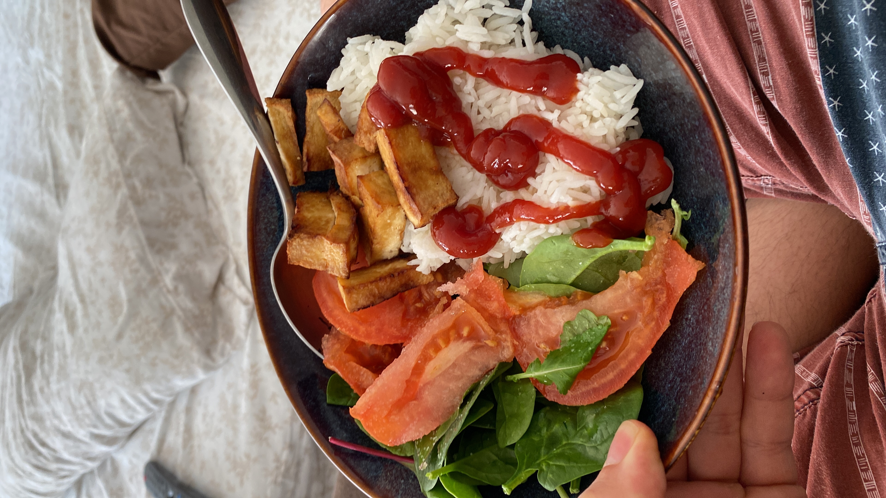

Chicharron Tofu

Chicharron tofu served with white rice and salad.
Ingredients
This is a very approachable recipe no matter what you use to cook the tofu. It works with pans, airfryers and ovens!
Furthermore, it only requires two ingredients, tofu and soy sauce. I will say that if you use and oven you will
probably have to cook for longer accounting for the fact the water in the tofu doesn't release as easily as the
other methods.
Steps
- Cut tofu into small squares
- Place tofu in glass bowl
- Cover tofu in just enough soy sauce for all squares to absorb flavor
- Leave standing for 10 minutes
- If using an air fryer, pour the tofu inside your air fryer and air fry for 10 minutes
- Bam! Enjoy your chicharron tofu!
Home